Qual obra está dando dinheiro?
Todas as obras lado a lado: caixa hoje, resultado projetado, margem e avanço físico. A que está segurando o mês aparece primeiro, com o motivo.
Cada real que entra e sai de cada obra, num painel só. Você vê o gasto, o caixa e a margem de toda a carteira — hoje, não no fechamento.
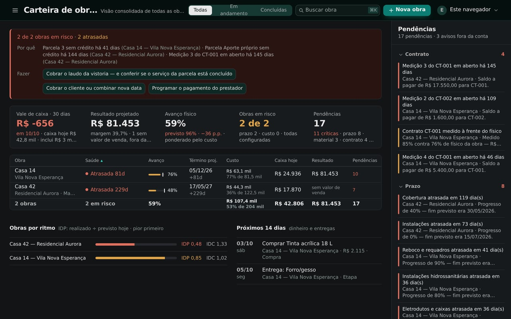
Tela real do sistema · dados de exemplo, obras fictícias · clique para ampliar
Imagine abrir um painel e saber, em segundos, quanto cada obra gastou, quanto ainda vai entrar e quanto vai sobrar no fim. Sem planilha. Sem caderno. Sem ligar para o mestre de obras. Tudo num lugar só — e você no controle da obra inteira.
Planilha por obra, print de WhatsApp, caderno de campo. Com uma obra, dá. Com três tocando ao mesmo tempo, ninguém sabe qual está dando dinheiro — até a conta não fechar.
O empreiteiro recebe por uma etapa que ainda não está pronta, e ninguém cruza o que foi pago com o que foi executado.
Compra, frete e taxa entram no mesmo bolo. Qual etapa passou do orçado só se descobre no fim da obra.
O mês apertado aparece quando o boleto chega, não quando ainda dava para segurar uma compra ou cobrar um recebimento.
Fim das planilhas desconexas.
Cada informação é lançada uma vez, por quem está na obra, e aparece para quem decide. O que antes vivia em seis lugares diferentes passa a morar num só.
Todas as obras lado a lado: caixa hoje, resultado projetado, margem e avanço físico. A que está segurando o mês aparece primeiro, com o motivo.
Cada compra, taxa e serviço lançado na etapa certa. O orçado × realizado por etapa mostra qual estourou — enquanto a etapa ainda está em andamento.
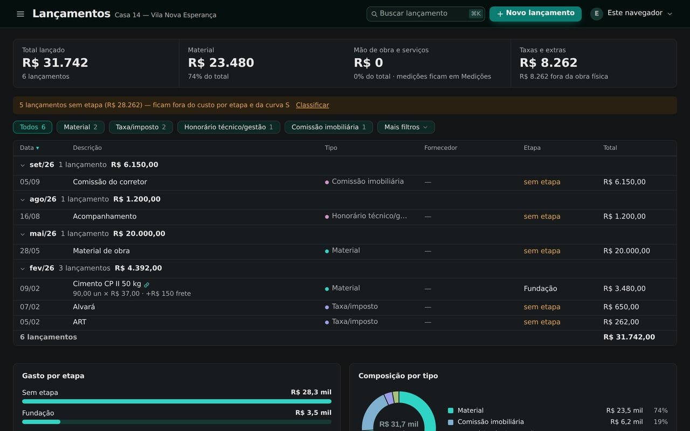
O fluxo projetado mostra o vale de caixa: o dia em que o saldo chega no mínimo. Dá tempo de antecipar um recebimento ou segurar uma compra.
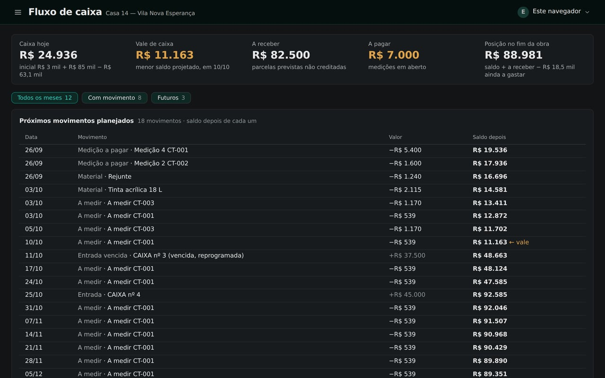
A curva S cruza o avanço físico com o dinheiro que saiu. E a medição trava no contrato: não dá para pagar mais do que foi executado.
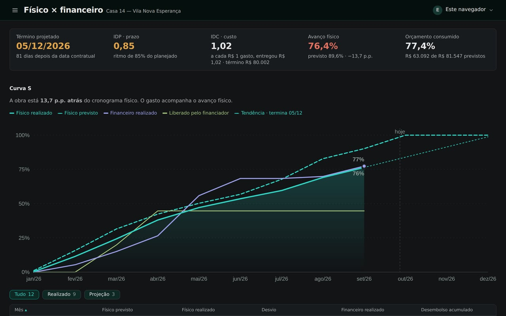
Cada pendência vem com a causa, o valor em jogo e a ação. Não é "algo está errado" — é o que resolver primeiro.
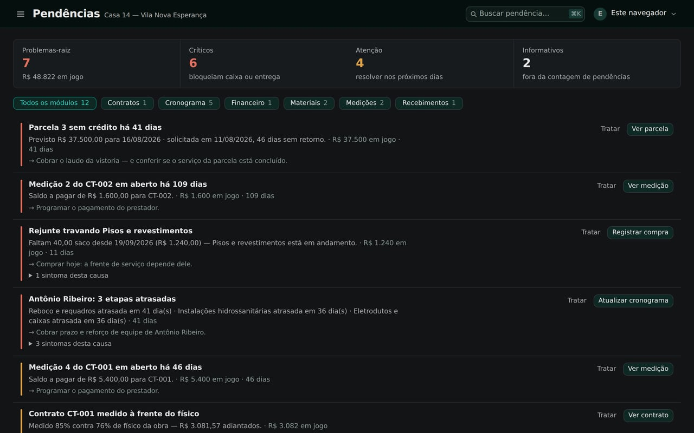
O menu do sistema segue a vida da obra. O que você lança em um lugar aparece em todos os outros — sem digitar duas vezes.
Orçamento e metas, contratos e aditivos, cronograma com dependências e caminho crítico, plano de materiais por etapa.
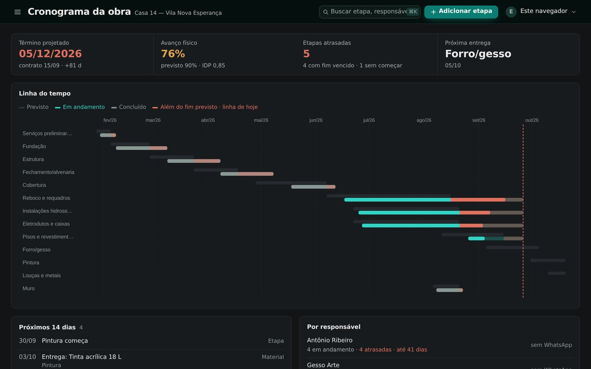
Medições com trava no contrato, compras e taxas lançadas por etapa, recebimentos do cliente ou do banco e diário de obra com fotos.
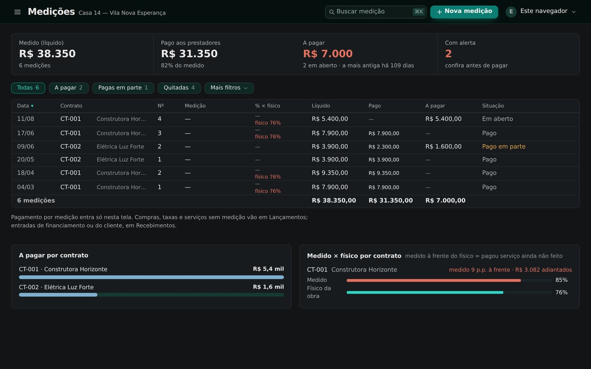
Painel da obra com caixa, resultado e margem; curva S, fluxo de caixa, pendências e relatórios em PDF.
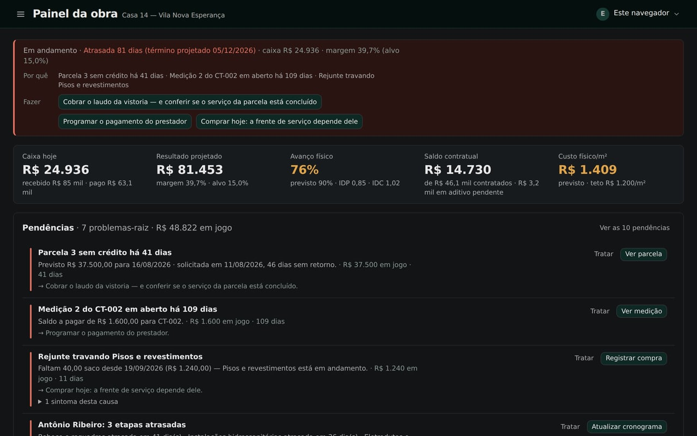
Gerado dos mesmos dados que você já lançou. Sem montar planilha explicativa no fim do mês.
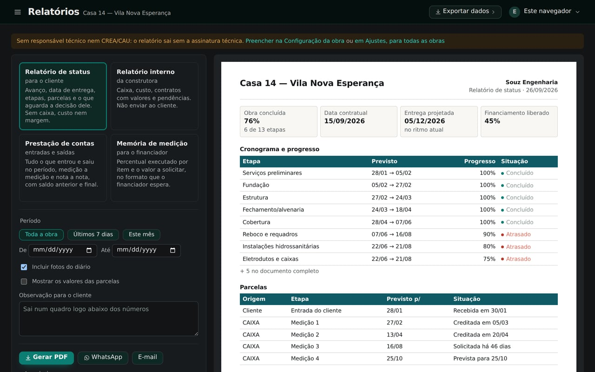
Diário de obra com fotos, direto do celular — funciona sem rede e sincroniza quando a rede volta. Prestador chamado no WhatsApp em um toque. Material que faltou vira pendência antes de parar a frente de serviço.
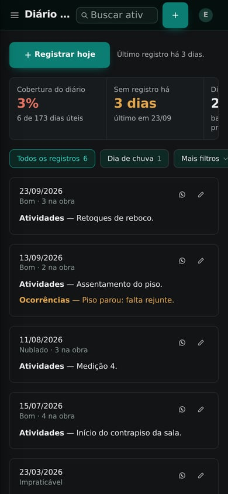
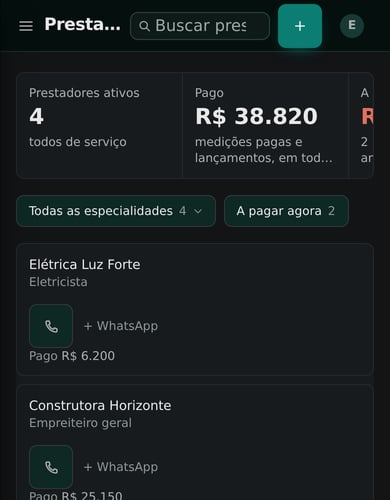
Recebimento por marco físico de qualquer financiador — CAIXA, outro banco, consórcio ou o próprio cliente. Cada parcela mostra em que etapa está, e o liberado × executado diz quanto já dá para solicitar.
Margem, caixa e resultado de cada obra num painel, sem esperar o contador nem o fechamento.
Cronograma, medição e diário de cada obra, de qualquer lugar — inclusive do celular, na visita técnica.
Relatório pronto para o cliente ou para o sócio, sem montar planilha explicativa toda vez.
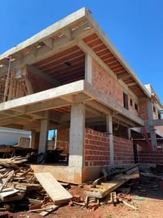
Da casa térrea ao prédio com grua: o controle é o mesmo, obra por obra, na mesma carteira.
Cada cliente enxerga só as próprias obras.
Toda alteração registrada: quem mudou, o quê e quando.
Seus dados não ficam presos ao sistema.
Banco de dados na região São Paulo.
Implantação assistida em todos os planos: alguém do time importa sua planilha e configura a primeira obra com você.
Qualquer obra: residencial, comercial, reforma, por empreitada ou administração. Obra financiada tem recursos a mais (parcelas do banco, memória de medição), mas não é exigência.
Sim. A Carteira mostra caixa, resultado projetado, avanço e pendências de todas as obras lado a lado, e você entra em cada uma com um clique.
Sim, pelo navegador do celular, sem instalar aplicativo. O diário de obra funciona até sem rede e sincroniza quando a rede volta.
Assistida: ajudamos a importar sua planilha atual e a configurar a primeira obra dentro do sistema.
Sim. Existe importação direta de planilha no modelo MCMV; para outros formatos, a implantação assistida organiza a migração com você.
Em banco de dados hospedado no Brasil, região São Paulo. Cada empresa só enxerga os próprios dados.
Não. É um sistema web: abre no navegador, no computador ou no celular.
Traga uma obra de verdade. Na demonstração, você vê o gasto, o caixa e a margem dela numa tela só.
ou escreva para gustavo.souza@souztech.com